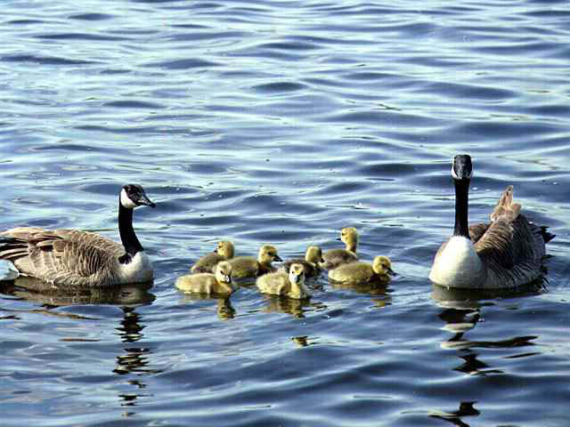

Management Projects
In order to fish in Saskatchewan, you must obtain an angling licence (unless you fit in one of the groups not requiring a licence). Have you ever wondered how the money, from the licence sales, is spent?
Since 1984, the Fish and Wildlife Development Fund has received 30 per cent of this revenue. These funds are invested in our fish resource to conserve and enhance fish stocks and improve angling opportunities. To give you an idea of how the money is used, here is a list of recent developmental projects either partially or completely funded by the Fish and Wildlife Fund:
- Art White Lake - improvement to 2 kilometres of bush trail to allow easier and safer ATV access for anglers wanting to fish for perch and walleye.
- Conglomerate Creek - Stream habitat improvement for brown trout. Includes improving farm access crossings, fencing to protect critical habitat from livestock damage, and providing alternate water supply for livestock.
- Hazlet Reservoir - Three-year trial aeration system removed as it was unsuccessful at preventing winterkills in this highly productive and shallow waterbody.
- Little Jackfish Lake - installation of fish barriers to prevent further escape of stocked trout. Barriers were also put in place in Stark Lake to prevent entry of predators.
- Oscar Creek - habitat improvement project for brook trout
- Parr Hill Lake - habitat improvement. A dyke and control structure were constructed to raise the water level by 2 metres, thereby reducing the risk of winterkill.
- Redberry Trout Pond and Wynyard Regional Park - installation of aeration systems.
- Other - Assessment of appropriate waterbodies that would support stocked smallmouth bass
Several operational projects have been in place in the province.
- Over 25 aeration systems operate in marginal waterbodies.
- Catchable-size rainbow trout stocked by private suppliers in a few ponds heavily used by anglers; including Bright Sand Regional Park, Candle Lake Provincial Park and Buffalo Pound Provincial Park.
- Cutthroat trout stocked in several lakes throughout the province; continuing program in place to access the catchability and growth rate of this species.
- Walleye and northern pike fingerlings have been raised in several rearing ponds throughout the province. Several waters stocked with these species.
- Mini-hatcheries (volunteer) in operation to help increase stocks of walleye and rainbow trout.
- Educational activities for youth throughout the province including field trips to mini-hatcheries.
|